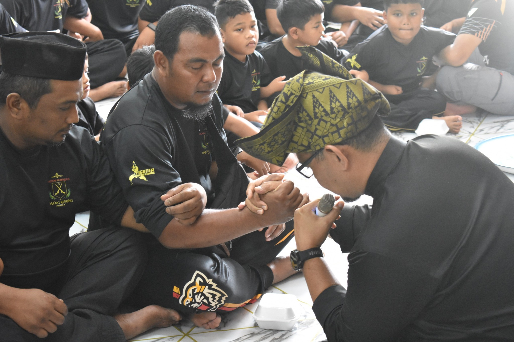
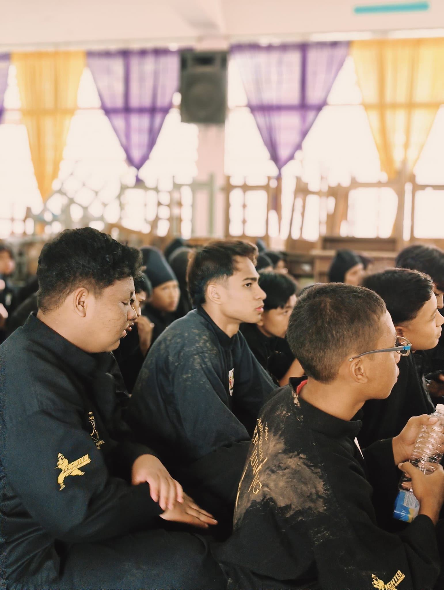

Garis Masa Kemajuan
2017 : Penyatuan Kudrat
Paksi pertama Daeng Kuning ditanam dengan penubuhan rasmi bermula di Changkat Jering. Akademi Persilatan mula menghimpun anak-anak watan untuk siri bimbingan jasmani.

Silibus PSSGM
Melangkah setapak lagi dengan pengesahan dari PSSGM Perak. Silibus holistik merangkumi pertempuran tangan kosong dan senjata digarap sebagai mata laras rasmi silibus pusat.

Medan Prestasi
Menembusi liga profesional. Daeng Kuning membekalkan wakil pejuang untuk bertarung di gelanggang kejohanan silat sukan, silat seni dan menjayakan demonstrasi jemputan terhormat.
